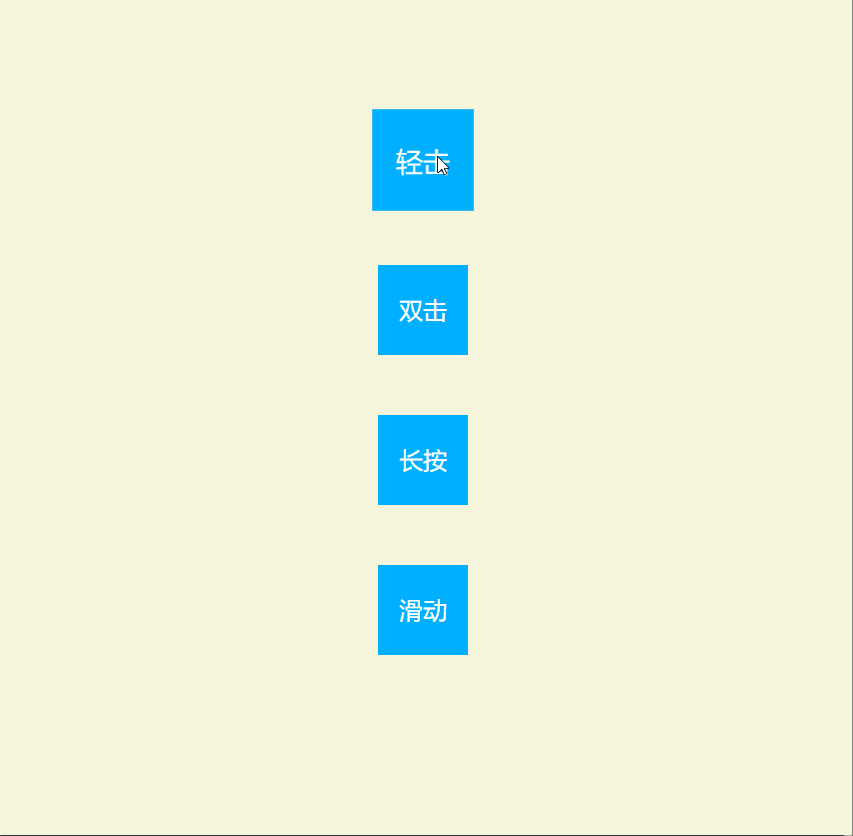

Hammer.js 是一个开源的轻量级 JavaScript 库，专门用于识别和处理移动设备上的触摸手势。它能够识别包括点击、双击、拖动、缩放、旋转等多种手势，可以在不依赖其他框架的情况下独立使用，而且很轻量压缩后仅 7.34KB。Hammer.js 的设计目的是简化移动端开发中的手势识别过程，提供高性能的交互体验.
核心特性
Hammer.js 应用于需要精细触摸交互的移动 Web 应用和游戏开发中。它可以用于实现图片轮播、地图缩放、游戏控制等功能。
在项目中使用 Hammer.js ，需要通过 npm 或 yarn 将 Hammer.js 安装。
npm install --save hammerjs
# 或
yarn add hammerjs
示例代码中，使用 CDN 引入 Hammer.js。首先定义 DOM 结构如下：
<div id="app">
<div class="wrapper">
<div class="square" id="tap">轻击</div>
<div class="square" id="doubleTap">双击</div>
<div class="square" id="press">长按</div>
<div class="square" id="swipe">滑动</div>
</div>
</div>
<script
src="https://cdnjs.cloudflare.com/ajax/libs/hammer.js/2.0.8/hammer.js"
integrity="sha512-qRj8N7fxOHxPkKjnQ9EJgLJ8Ng1OK7seBn1uk8wkqaXpa7OA13LO6txQ7+ajZonyc9Ts4K/ugXljevkFTUGBcw=="
crossorigin="anonymous"
referrerpolicy="no-referrer"
></script>
<script type="module" src="./index.js"></script>
创建 Hammer 对象，定义识别器和注册回调事件。
const $ = (e) => document.querySelector(e);
// 轻击事件
const tapManager = new Hammer.Manager($("#tap"));
// 定义触发器
const tap = new Hammer.Tap({
taps: 1,
});
// 添加到 manager 中
tapManager.add(tap);
// 注册回调
tapManager.on("tap", (e) => {
e.target.classList.toggle("expand");
});
效果如下
Hammer.js 支持多种手势识别，以下是一些常用的识别器：
Pan 事件：手指按下并移动，就是触摸屏的拖动。包括 panstart、panmove、panend、pancancel以及方向性事件如panleft、panright、panup和pandown。Pinch 事件：当两根手指或多根手指相对移动或相向移动时触发。包括 pinchstart、pinchmove、pinchend、pinchcancel 以及 pinchn（手指距离变近）和 pinchout（手指距离变远）事件Rotate 事件：当两根手指或更多手指呈圆形旋转时触发。包括 rotatestart、rotatemove、rotateend 和 rotatecancel 事件 。Press 事件：在指定的 DOM 对象中，进行按压的点击事件，相当于 PC 端的 click 事件，最小按压时间为 500ms。包括 pressup 事件 。Tap 和 Doubletap 事件：点按和双击手势。Swipe 事件：快速滑动手势，可以设置方向性，例如仅水平或垂直方向Hammer.js 允许同时监听多个手势、自定义识别器，并且可以通过 recognizeWith和 requireFailure 等方法来定义识别器之间的关系 。默认情况下，pinch 和 rotate 识别器是禁用的，如果需要使用它们，可以通过设置 enable: true 来启用 。
Hammer.js，这个小巧的 JavaScript 库让移动设备上的手势操作变得超简单。不管是轻点、滑动还是捏合放大，它都能轻松识别，而且用起来特别方便。小伙伴们可以快速上手，给自己的项目加上各种酷炫的手势功能。